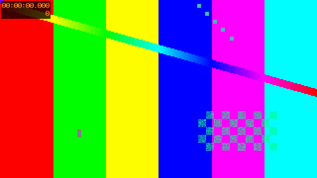

Placeholder entry that exercises every component of the experiment page template. Every number,
prompt, and model output on this page is illustrative filler, not a measured result. Delete this
folder and its entry in experiments.json once a real experiment exists.
Use the overview for two or three sentences a reader needs before anything else: what was run, on what data, and the one-line takeaway. Keep the detailed narrative for the later sections.
State the question as a question. Example placeholder: Can an interactive video model decide when to respond, and which evidence does it use?
A short paragraph describing each stage, or a figure of the pipeline, goes here.
You are a careful assistant. Describe only what the frames support. Do not invent speech, sounds, intentions, or unseen events.
Describe this video in one or two concise English sentences. Return only the caption.
Write a detailed English caption of this video in one coherent paragraph, usually four to six sentences. Describe the visible scene, subjects, objects, and important actions or changes in chronological order. Mention interactions and outcomes only when visible. Use fewer sentences when little happens. Return only the caption.
A placeholder caption that stands in for a real model response.
| Model | Prompt | Metric 1 | Metric 2 | Latency (s) |
|---|---|---|---|---|
| Model A | variant 1 | 0.00 | 0.00 | 0.0 |
| Model A | variant 2 | 0.00 | 0.00 | 0.0 |
| Model B | variant 1 | 0.00 | 0.00 | 0.0 |
Example layout only. Mark the best value per column with class="best" and an emphasized row with class="highlight".
{
"model": "Model A",
"prompt": "variant 2",
"metric_1": 0.0,
"metric_2": 0.0
}
assets/ folder.
What the model got right and which evidence it used.
Cases wrap into a grid and collapse to one column on phones.
What went wrong, with the exact output.
Answer the research question directly, in two or three sentences.
python run_experiment.py --config config.json